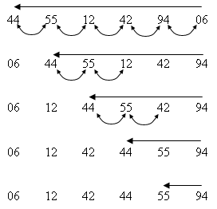

|
|
|
Обменная сортировка характеризуется тем, что основной операцией является операция обмена в парах элементов при упрощенной схеме выбора сравниваемых элементов. Представителем этого метода является пузырьковая сортировка. В результате многократных просмотров всех пар соседних элементов в массиве происходит просеивание "легких" элементов к началу массива. При просмотрах пар производится обмен местами элементов, если их порядок не соответствует порядку сортировки.  Bubble_Sort (A [ 1..n ] )
Этот алгоритм не является адаптивным. Его можно улучшить, проверяя не оказался ли очередной проход последним. Проходы можно досрочно прекратить, если на последнем проходе не было ни одного обмена, что говорит о том, что массив уже упорядочен. Для улучшения достаточно подсчитывать число произведенных обменов во время прохода и анализировать этот счетчик перед началом следующего прохода. Однако даже это улучшение не достигает эффективности алгоритма методом включения, поскольку в нем осуществляется упрощение не внутреннего цикла, а внешнего. Эффективность этого алгоритма имеет оценку O(n2). |